Furniture and devices
What stands in the rooms. Furniture blocks the way, so walk round it; machines work only while their room has power.
Furniture
| Furniture | What it is for | |
|---|---|---|
 | Table | Blocks the way. Things lie on it: stand beside it and Put on table what you hold, and Pick up from it as from the floor. Tables also make the reception desks (a counter with a seat for the clerk on one side and the public on the other), a long dining table and low tables in the lounges. The reception desks are service windows: a glass partition with a roll shutter in each window. The shutter is open while someone sits in the seat behind it and shuts when nobody does; whoever works the desk can also open and shut it by hand (Open shutter, Close shutter). A shut shutter keeps the public from putting things on the counter, taking things from it or reaching across it. |
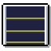 | Rack | A shelf against the wall for tools and supplies. Blocks the way and works like a table: Put on rack, Pick up. |
| Closet | Blocks the way and holds 40 slots of 8 like things out of sight. Stand beside it and Open closet to see its contents as a list, one row per kind with how many: tap a row to take one, Put in puts what you hold in (Put in all adds the same kind from your other hand and backpack). Only you see inside, and it closes when you walk away. A locked closet has a light, red for an ID card that does not open it; it opens only for a card, worn or in the hand in use, with the access it asks for. | |
| Bench | A bench to sit on, in the hub and the common room of the quarters. Stand beside it and tap Sit: you sit down on it, strapped in. Nothing lies on it, and nobody walks onto it without sitting. | |
 | Seat | A chair, a stool, a console seat or a toilet seat in its stall, with straps; or lying furniture, a bed in the Crew Quarters or the operating table. Stand beside a seat and tap Sit: you move onto it and sit, strapped in, facing the way the seat faces. A bed is no seat: step onto an empty one (it is walked over like floor) and tap Sleep, or tap Lie down at the operating table. One seat holds one person. Tap Get up, or take a free step, to get up. |
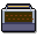 | Planting tray | A planting tray in the greenhouse. Stand beside it with a seed in your active hand and tap Plant; a young plant shows in it, then a ripe one after 2 minutes to 6 minutes depending on the crop, and Harvest picks it. It keeps its own water, nutrients, weeds and health: tap Check tray for the line, and Water, Fertilize, Weed and Treat to care for it. Dry soil, weeds and spots show on it. Blocks the way. |
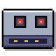 | Stove | A cooking station in the kitchen. Put ingredients on it like on a table, then tap Cook (pick a dish from the list, 6 to 12 seconds, half of that for the Chef): the ingredients are used up and the dish lands on the stove. The recipes: harvest hash (protein block and potatoes and onions), protein skillet (protein block and beans), vegetable stew (carrots and potatoes and onions), corn chowder (corn cobs and potatoes and onions), tomato pilaf (rice and tomatoes), rice bowl (rice and beans), bean stew (beans and tomatoes), mushroom pan (mushrooms and onions), potato soup (potatoes and onions), fried potato strips (2 potatoes), fruit compote (apples and beet sugar), tomato soup (2 tomatoes), flatbread (2 wheat), carrot salad (2 carrots), onion broth (2 onions) and baked potato (potatoes). Blocks the way. |
 | Bar mixer | The bar's mixing counter. Put a tomato or a handful of wheat on it and tap Mix (3 seconds, half of that for the Bartender). The drinks: tomato fizz (tomatoes), malt tea (wheat) and beet sugar (sugar beets). They fill a little of the hunger meter and nothing else. The tables beside it are the bar counter, where the Bartender shakes cocktails with the shaker. Blocks the way. |
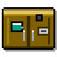 | Cabinet | A flat cupboard set in a wall between two rooms, with a handle and a small window. It works like a closet (holds 40 slots of 8 like things; Open cabinet, tap a row to take one, Put in puts what you hold in) but it can be opened from both sides of the wall, so one room stocks it and the other takes from it. A lock on it, a light that is red for a card that does not open it, asks for a card of the access it names, or any one of several. |
 | Prop | Scenery and fittings: potted plants (they stand against a wall, in a corner, at a window or in a row; the planters and floor lamps, and the flags, are things you can move, not scenery), bookshelves (which take books and the law books back), a lectern, flags and a fax machine in the Advocate's Chambers. Some fittings are used: the surgery's instrument tray and anaesthesia stand take small things like a rack, wash basins (the surgery's and the restroom's sinks) wash hands, the Morgue's drawers open (Open drawer: the tray slides out; Place body on tray lays a dead body on it, or Help someone in / Climb into the drawer a living one, Close drawer shuts it in; Take body out lays whoever is in it on the floor beside you) and its autopsy table takes a body (Lay body on table) and gives whoever tapped Autopsy a private report. It blocks the way; walk round it (the map keeps every door and room reachable). The crawlways have no scenery: every fitting there is a rack, a locker or a storage crate with things in it. Floor decals (rugs, carpets, the hub's floor inlay, the platform of the Station Master's chair, the operating theatre's sterile floor, caution stripes at a tunnel door) are only paint. |
 | Storage crate | A heavy steel-banded crate, fixed to the floor, in the crawlways. It works like a closet (holds 40 slots of 8 like things; Open crate, tap a row to take one, Put in puts what you hold in, Close the crate) and is never locked. Only you see inside, and it closes when you walk away. Each tunnel pocket has one to three racks, lockers and crates with different things in them: flashlights, candles, fire extinguishers, budget gloves, books, cable coils, plates and tools. A candle put into a crate goes out. |
| — | Lathe | The Machine Workshop's lathe. Put plates on it (Put on lathe, each plate lying on it counts), tap it, choose a part: a battery cell (3 plates, 20 seconds), a inverter module (2 plates, 15 seconds), a copper wire (1 plate, 8 seconds), a solar panel (4 plates, 24 seconds), a bolts (1 plate, 5 seconds), a pipe (2 plates, 6 seconds), a valve kit (3 plates, 10 seconds), a pump kit (4 plates, 14 seconds), a vent kit (2 plates, 8 seconds), a scrubber kit (2 plates, 8 seconds), a rotor bearing (2 plates, 15 seconds), a rotor seal (1 plate, 10 seconds) or a rotor brush (1 plate, 5 seconds). After the work the part lies on the lathe, to pick up; the plates it needed are used up. Plates are the raw metal for now (the Miner will bring ore later). It blocks the way. |
| — | Winding bench | The Electrical Workshop's winding bench. The transformer's core, lifted out and set down here by the crane, is rewound here with a spool of copper wire (Rewind, 40 seconds). Blocks the way. |
Seats and props
- Chair
 Stool
Stool Console
Console Bed
Bed- Toilet
 Table
Table Crate
Crate- Potted plant
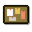
Notice board- Bunk
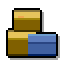
Stacked boxes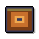
Cable spool Toolbox
Toolbox Broken chair
Broken chair Bookshelf
Bookshelf Lectern
Lectern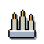
Candles Floor lamp
Floor lamp Pipes
Pipes Planter
Planter Pillar
Pillar- Operating table
 Surgical lamp
Surgical lamp Instrument tray
Instrument tray Anaesthesia stand
Anaesthesia stand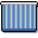
Privacy curtain Wash basin
Wash basin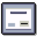
Morgue drawer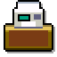
Fax machine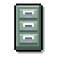
Filing cabinet Flag
Flag Sideboard
Sideboard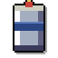
Gas tank- Insulator stack
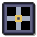
Cooling fan Equipment cabinet
Equipment cabinet Autopsy table
Autopsy table Compost bin
Compost bin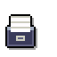
Paper bin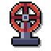
Valve wheel: A red hand wheel on a pipe stub, found beside pumps and tank lines. Scenery: it turns nothing, the plant's real valves are machines.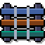
Pipe rack: Colour-coded water, steam and gas runs on two uprights along a crawlway wall. Scenery. Cable tray: A ladder tray with a bundle of cable in it, where cable runs along a wall. Scenery: the real cables are the ones in the floor plan.
Cable tray: A ladder tray with a bundle of cable in it, where cable runs along a wall. Scenery: the real cables are the ones in the floor plan.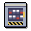
Breaker box: A breaker box on the wall of a workshop or a crawlway. Scenery: a room's power is switched at its panel.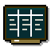
Shift board: A chalkboard that lists the day's watches in three columns. Scenery. Water cooler: A water cooler with its bottle, in a hall or a rest corner. Scenery.
Water cooler: A water cooler with its bottle, in a hall or a rest corner. Scenery.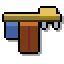
Coat hooks: A board of hooks with a coat, a cap and a hat on them, by a door to the wet rooms. Scenery.- Locker bank: A bank of three tall steel lockers. Scenery: the lockers that hold gear are the closets.
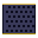
Wet mat: A rubber mat with a yellow edge laid inside the door of a wet room. Flat: it is walked on. Drain grating: An iron drain grating in the floor of a wet room. Flat: it is walked on.
Drain grating: An iron drain grating in the floor of a wet room. Flat: it is walked on.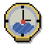
Tide clock: A round clock with a wave in the dial that tells the tide. Scenery.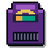
Jukebox: A jukebox with a lit arc, in the Bar. Scenery. Kelp jar: A glass jar of green kelp from the Botanics tank. Scenery.
Kelp jar: A glass jar of green kelp from the Botanics tank. Scenery.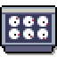
Gauge wall: A panel of six dial gauges for the pumps and tanks. Scenery.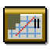
Chart table: A table with a chart of the coast and a course drawn in red. Scenery. Sample sink: A steel sink with a rack of sample tubes, in a lab. Scenery.
Sample sink: A steel sink with a rack of sample tubes, in a lab. Scenery. Drying line: A rope of washing (a towel, a glove) hung over the floor. Flat: it hangs overhead and is walked under.
Drying line: A rope of washing (a towel, a glove) hung over the floor. Flat: it hangs overhead and is walked under.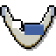
Hammock: A hammock slung between two hooks with a blanket in it. Scenery.
Seats are chairs, stools, console seats and benches: the bridge's console seats, the chairs and benches of the hub and the kitchen counter's stools, the infirmary's and the stores' desks, and the strap seats of the crew-transfer shuttle, which docks at the docking port. None are in the crawlways.
Stand beside a seat and tap Sit, or stand on a free seat and tap Sit (it comes after the buttons of the tool in your hand and of the consoles in reach). You move onto its tile and sit, strapped in, in the seat's direction; everyone who sees you sees you seated. Sitting takes no time and nothing stops your work. A strapped person stays put, and on a station without gravity they do not float. One seat holds one person.
To get up just walk in any direction that is free (the Stand button does the same and puts you back where you were). A seat nobody sits on is walked over like floor, so chairs never block a room; only a seat somebody sits on blocks the way.
Devices
| Device | What it does | |
|---|---|---|
 | Crew monitor | Lists every suit that reports, as much as its owner set the sensors to tell: alive or dead, health, where. In the Infirmary. |
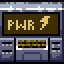 | Power monitor | Shows the arrays, the battery bank, the load and which rooms have power and why the others do not. |
 | Atmos console | The atmos console. Lists every room with an air alarm, the worst first, with what is wrong; tap a room for its card. Any engineer can send a room Panic or Normal here, or Panic all red rooms (a 10 second cooldown). It flashes red on the map while a room's air is in trouble. It works only while its room has power. |
 | Supply console | Shows the station's supply points. Anyone can request an item here; the request waits in its list until someone approves it, which spends the item's cost, or denies it, or whoever asked withdraws it. Shipping the pad here sends away the empty crates on the delivery pad for supply points. |
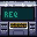 | Request console | Anyone can request an item here. The request waits in the order console's list until Storekeeper approves or denies it, or whoever asked withdraws it. It shows what became of your requests: approved and on its way, landed on the pad, or denied. It shows no supply points. |
 | Order console | For the Stores: needs stores access. Shows the station's supply points and the requests waiting. Approving one spends the item's cost and prints an order form here; denying takes it off the list. Shipping the pad here sends away the empty crates on the delivery pad for supply points. Whoever works the counter can also request an item here, with the prices shown. |
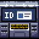 | ID console | The ID console, on the Registrar's side of the desk (a solid device; it works only while its room has power). Someone whose own ID card has command access (the Station Master's or the Registrar's), worn or held in the hand they are not working with, holds the ID card to change in their active hand, stands beside the console, taps ID console and Insert ID card, then picks a job from the list, open jobs first: Assign <job>. The card's job and its access become that job's (the old access is gone; the kit you started with stays), its owner is told ("Your ID now says Chef") and the change is written in the round log. Each job has a few places (more with every ten people aboard): when they are taken the console says so and changes nothing, until someone leaves the job. Every change prints a Job slip (a paper naming the new job, the card's owner and the old job) into the operator's free hand, or at their feet: stamp it and file it in the cabinet for a paper log. The card stays in the operator's hand. Nobody may change their own card. |
 | Delivery pad | Orders land here in a crate, marked for whoever asked until the things are taken out of it. Take them out, or load the crate on the stores cart and deliver it. Empty crates lying here can be shipped from the supply console; the station's own things stay. |
 | Filing cabinet | Where stamped order forms are filed: 2 supply points each. |
 | Ration dispenser | A wall dispenser of ration packs: stand beside it and tap Take ration. It gives each person one pack every 90 seconds (35 percent of the hunger meter), whether or not there is a Chef, so no one starves for want of a cook. It works only while its room has power. |
| Job board | The job board, a cork board hung on the information wall of the hub (a wall tile: nobody walks onto it). Stand beside it and tap Job board: one list of the jobs on this shift with how many have each (a job nobody holds is marked open; only counts, never names), the time left in the shift and where the crew-transfer shuttle is. The Registrar's announcement line will end the list once a Registrar can write one (#68); until then there is no line. It works only while its room has power; without power it is dark. | |
 | Tactical table | The Bridge console, the tactical table in the middle of the bridge: a hologram of the station over a table. Stand beside it and tap Tactical table: the station's alert level first (Calm, Swell or Gale, in its colour), then how many rooms have power, how many air alarms are ringing, the supply and the battery, the shuttle, and a line for every room that needs someone (cut off, switched off, short of power, bad air). Anyone reads it. Only the Station Master's card sets the alert level (a Watch Officer's raises Calm to Swell while no Station Master is on their feet) and gives the Station Master's orders, each with a cooldown: see the Alert levels section. Dark without power. |
 | Room power panel | Switches a room's power on and off, and shows whether it is connected to a cable that a source feeds. |
| Window | A pane in an outer wall: the stars show through. It is part of the hull. | |
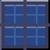 | Solar panel on its truss | One panel of a solar array on its truss outside the hull. It gets dusty, cracks, and can be replaced. |
The hull
Outer walls wear in stages; see Incidents.
 Worn plating: a stain where the plating is thin.
Worn plating: a stain where the plating is thin. Cracked plating: a hairline crack and a small leak.
Cracked plating: a hairline crack and a small leak. A hole in the hull.
A hole in the hull. Plating stripped off: the frame is bare.
Plating stripped off: the frame is bare.